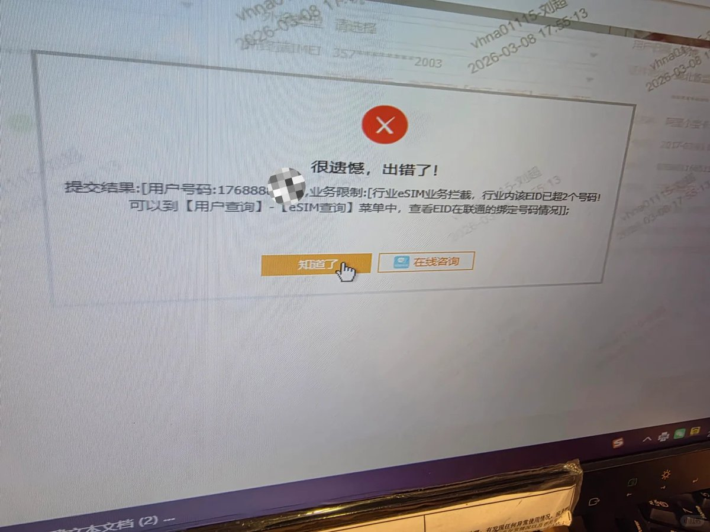
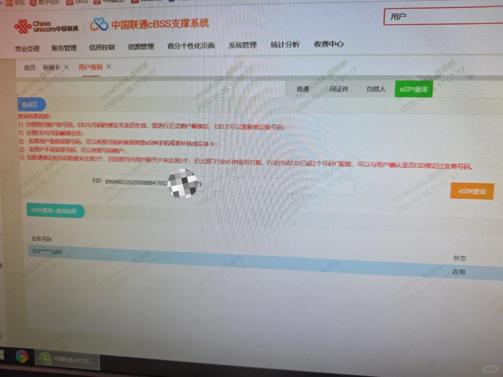
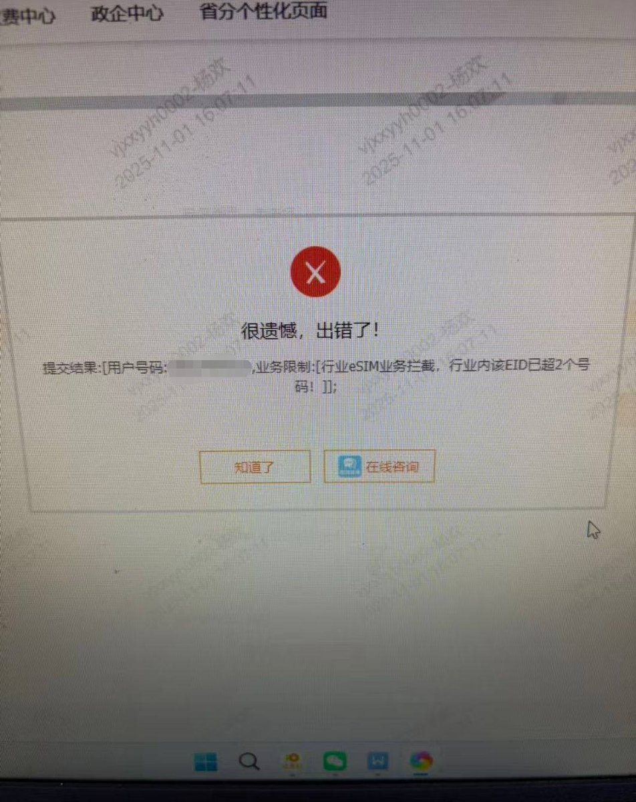

发推不到一个月，在xhs上的网友“Lee”收了台二手iPhone Air，原机主之前写入了一张联通的eSIM，补换实体卡后手机设备上移除了eSIM并抹掉了所有内容。
他买到手后去营业厅成功写入移动号码，然后去联通准备写入第二张卡的时候提示图1（行业内该EID已超2个号码）
图2该手机设备EID查询名下联通eSIM仍然还是存在原机主业务号码显示在用状态，但原机主月初已经补换实体卡了
所以收二手国行eSIM设备的朋友一定要留个心眼，即使原机主补实体卡后，运营商那里还是有eSIM和设备EID绑定状态，这就导致下一个主人没法写新的国内eSIM。还好原机主只写了一张，要是双卡那估计这老哥只能跑境外写GSMA外卡了，还不如买外版🤣🤣🤣

他买到手后去营业厅成功写入移动号码，然后去联通准备写入第二张卡的时候提示图1（行业内该EID已超2个号码）
图2该手机设备EID查询名下联通eSIM仍然还是存在原机主业务号码显示在用状态，但原机主月初已经补换实体卡了
所以收二手国行eSIM设备的朋友一定要留个心眼，即使原机主补实体卡后，运营商那里还是有eSIM和设备EID绑定状态，这就导致下一个主人没法写新的国内eSIM。还好原机主只写了一张，要是双卡那估计这老哥只能跑境外写GSMA外卡了，还不如买外版🤣🤣🤣



收二手的国行iPhone Air一定要留个心眼，看起来三大运营商的EID绑定数据是共通的，一旦该EID绑定了2个国内eSIM将出现业务拦截，无法办理业务。
若上一任机主在卖手机之前，没有将eSIM转为实体卡，那这台国行Air将加不了任何国内eSIM，只有让原机主将之前绑定的号码补成实体卡才能解绑。 https://t.co/CVQslGiRnh
若上一任机主在卖手机之前，没有将eSIM转为实体卡，那这台国行Air将加不了任何国内eSIM，只有让原机主将之前绑定的号码补成实体卡才能解绑。 https://t.co/CVQslGiRnh